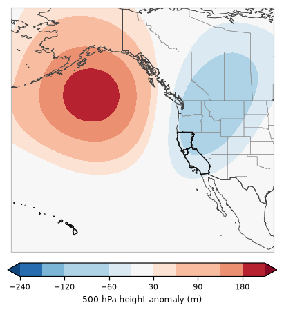

One of 6 recurring 500 hPa patterns over the eastern Pacific and western U.S. in California's fire seasons, 2001–2025 · 7% of season days

This pattern has a ridge (heights +218 m above normal) centered near the northeast Pacific and a trough (-96 m) centered near the northern Rockies, with lower than normal heights over California (cooler, more onshore flow, more chance of showers).
Pyroconvection (seven studied California fires, 262 fire days): 0 pyroCb and 1 pyroCu days in Regime F. Which days.
The map is the average 500 hPa (~18,000 ft) height anomaly over every day assigned to this regime: red = higher than normal (ridge), blue = lower than normal (trough). Upper-level ridges bring sinking, warming, drying air; troughs bring cooler air, onshore flow and the chance of showers or thunderstorms, and the wind shifts and dry northerly flow that can follow them.
Share of each month's days (2001–2025) in Regime F.
Odds of a fire day with at least this much satellite-mapped growth, compared with the usual odds for the same time of year.
| Region | ≥1,000 ac | ≥5,000 ac | ≥10,000 ac |
|---|---|---|---|
| Northern California | ×1.08 | ×1.15 | ×1.25 |
| Southern California | ×0.93 | ×0.82 | ×0.84 |
| California | ×0.99 | ×0.93 | ×1.10 |
×1.00 = no different from usual; ×1.5 = half again as likely; ×0.6 = 40% less likely. A single 500 hPa pattern is only a modest signal on its own: lightning, wind events and fuel dryness matter a lot.
| Fire day | Acres (CA) | Largest fires that day |
|---|---|---|
| 2024-07-26 | 184,432 | PARK (155,419 ac), BOREL (28,548 ac), TROUT (465 ac) |
| 2021-08-17 | 139,125 | CALDOR (56,987 ac), DIXIE (44,595 ac), MONUMENT (12,590 ac) |
| 2024-07-25 | 134,633 | PARK (129,189 ac), BOREL (5,332 ac), TROUT (77 ac) |
| 2017-10-08 | 105,089 | TUBBS (CENTRAL LNU COMPLEX) (23,836 ac), REDWOOD VALLEY INCIDENT (MENDOCINO LAKE COMPLEX) (23,295 ac), ATLAS (SOUTHERN/CENTRAL LNU COMPLEX) (18,155 ac) |
| 2017-10-09 | 61,791 | ATLAS (SOUTHERN/CENTRAL LNU COMPLEX) (14,040 ac), NUNS (SOUTHERN/CENTRAL LNU COMPLEX) (11,352 ac), REDWOOD VALLEY INCIDENT (MENDOCINO LAKE COMPLEX) (10,630 ac) |
| 2021-08-18 | 53,750 | DIXIE (15,679 ac), HAYPRESS (RIVER COMPLEX) (10,579 ac), CALDOR (7,710 ac) |
| 2021-08-19 | 36,376 | HAYPRESS (RIVER COMPLEX) (10,277 ac), DIXIE (6,835 ac), CALDOR (6,664 ac) |
| 2017-10-10 | 35,872 | ATLAS (SOUTHERN/CENTRAL LNU COMPLEX) (15,550 ac), NUNS (SOUTHERN/CENTRAL LNU COMPLEX) (12,731 ac), POCKET (CENTRAL LNU COMPLEX) (2,503 ac) |
| 2021-08-20 | 35,674 | FRENCH (10,020 ac), DIXIE (8,960 ac), MCCASH (5,824 ac) |
| 2024-07-27 | 33,016 | PARK (19,516 ac), BOREL (13,361 ac), TROUT (138 ac) |
| 2003-10-29 | 30,730 | OLD (18,612 ac), PARADISE (5,367 ac), CEDAR (4,473 ac) |
| 2019-10-27 | 29,559 | KINCADE (29,559 ac), CAPLES (0 ac) |
None of the study's 9 pyroCb days formed under Regime F (1 pyroCu days did).
PyroCu (fire-rooted tops −20 to −40 °C) under Regime F: 1 days (Dixie).
Seven studied California fires (2018–2021), GOES-classified and reviewed by eye. Pyroconvection under the scenarios.
% of all members (models weighted equally) in Regime F, by day.
| 10/17 | 10/18 | 10/19 | 10/20 | 10/21 | 10/22 | 10/23 | 10/24 | 10/25 | 10/26 | 10/27 | 10/28 | 10/29 | 10/30 | 10/31 |
|---|---|---|---|---|---|---|---|---|---|---|---|---|---|---|
| 0 | 0 | 31 | 98 | 0 | 0 | 6 | 48 | 43 | 30 | 29 | 30 | 24 | 14 | 11 |